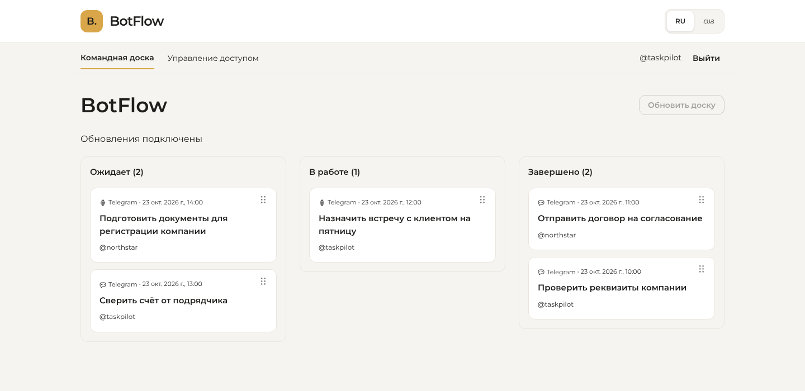

BotFlow
Задачи из текста и голосовых сообщений в Telegram на общей веб-доске. Локальный Whisper, интерфейс на русском и армянском.

Задачи из текста и голосовых сообщений в Telegram на общей веб-доске. Локальный Whisper, интерфейс на русском и армянском.
